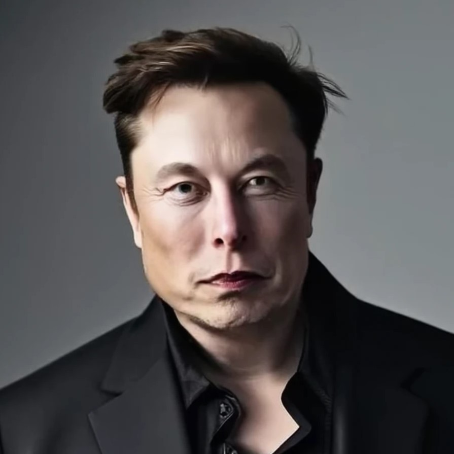

ELON MUSK
CEO
T+1 (XXX) XXX-XXXX
E elon.musk@spacex.com / elon.musk@tesla.com
Llinkedin.com/in/elonmusk
RESUMO PROFISSIONAL
Sou um empreendedor com um histórico comprovado de liderança e inovação disruptiva em várias indústrias, incluindo tecnologia, transporte e energia. Fundador e CEO de empresas como SpaceX, Tesla e Neuralink, impulsionando avanços significativos em exploração espacial, mobilidade elétrica e tecnologia de inteligência artificial.
EXPERIENCIA
Criei meu próprio jogo de videogame, que mais tarde foi vendido para uma empresa sul-africana por 500 dólares.
Wharton School.
1992 - 1997
Bacharelado em física na faculdade de artes e ciências.
Bacharelado em economia.
Universidade Stanford.
1995 - 2002
Doutorado em física aplicada e ciência dos materiais.
HABILIDADES
- Empreendedorismo
- Planejamento Estratégico
- Engenharia
- Inovação
- Liderança
- Sustentabilidade
- Gerenciamento de Projetos
- Oratória Pública
PROJETOS
SpaceX
2002 - Presente.
www.spacex.com/
Fundador e CEO.
- Liderei a SpaceX desde sua concepção até se tornar uma das principais empresas de exploração espacial do mundo, desenvolvendo foguetes reutilizáveis, como o Falcon 9 e o Falcon Heavy, e lançando missões cruciais para a NASA e clientes comerciais.
Tesla, Inc.
2004 - Presente.
www.tesla.com/
Fundador e CEO.
- Fui pioneiro no desenvolvimento de veículos elétricos de alto desempenho, como o Tesla Roadster, Model S, Model X, Model 3 e Model Y, além de sistemas de armazenamento de energia como o Powerwall e o Powerpack, transformando a indústria automobilística e energética.
Neuralink Corporation.
2016 - Presente.
www.neuralink.com/
Fundador.
- Dirigi os esforços da Neuralink para desenvolver interfaces cérebro-máquina avançadas, com o objetivo de conectar o cérebro humano diretamente a computadores e dispositivos, abrindo novas fronteiras na medicina e na interação homem-máquina.
IDIOMAS